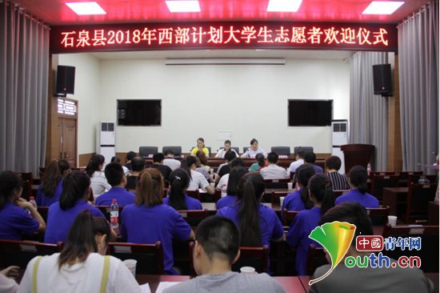

石泉县项目办欢迎新青年为当地发展奉献力量
桂电志愿者网 日期：2018-07-31 来源：中国青年网
中国青年网北京7月31日电（记者刘喆）“愿中国青年有一分热，发一分光，就像萤火一般，不必等候炬火......”近日，来自全国各地的11名志愿服务西部计划大学生志愿者怀揣着积极向上和不畏艰苦的勇气来到了他们的服务地—陕西省石泉县。

石泉县举行2018年西部计划志愿者欢迎仪式。图为欢迎仪式现场。石泉县项目办 供图
7月27日，石泉县2018年西部计划大学生志愿者欢迎仪式举行。会上，县项目对过去一年西部计划志愿者工作进行了总结回顾，同时组织志愿者们学习了《石泉县西部计划大学生志愿者相关管理制度》。新老志愿者代表分别作了表态发言，他们认为：作为刚步入社会的新青年应心怀憧憬与希望，应当不忘初心、尽己所能，在服务岗位上做出应有的贡献。
据悉，2018年是石泉县项目办成立的第14年，多年来县项目办一直坚持以石泉特色的志愿者服务管理办法，先后接收来自全国各地共300余名志愿者在石服务，为“三宜”石泉建设输送了新鲜血液，在未来的工作中，县项目办将继续带领广大志愿者发挥“奉献互助、友爱、进步”的志愿服务精神，在石泉这片热土上奉献青春力量！
【责任编辑：李彦龙】